Dès que vous avez un compte professionnel chez DHL eCommerce, nous créons immédiatement un compte pour My DHL Portal. Vous recevrez un e-mail avec un lien d'activation qui vous permettra de définir un mot de passe personnel. Le lien d'activation est valable pendant 48 heures. Le lien a expiré ? Dans ce cas, demandez un nouveau mot de passe en cliquant sur Mot de passe oublié? sur my.dhlparcel.be. Une fois votre compte activé, connectez-vous toujours sur my.dhlparcel.be. Pour une expérience utilisateur optimale, nous vous recommandons d'utiliser Google Chrome.
Dès que vous êtes connecté, vous voyez apparaître le tableau de bord. Il s'agit d'un aperçu des éléments les plus importants du service d'expédition. Vous pouvez voir quels envois sont prêts à être envoyés, quels envois font l'objet d'une exception et vous pouvez suivre vos envois directement sur le tableau de bord avec le système de suivi. Nous vous informerons des nouvelles fonctionnalités qui ont été ajoutées à My DHL Portal avec l'icône cadeau. Le crayon vous permet d'ajouter ou de supprimer des éléments du tableau de bord.
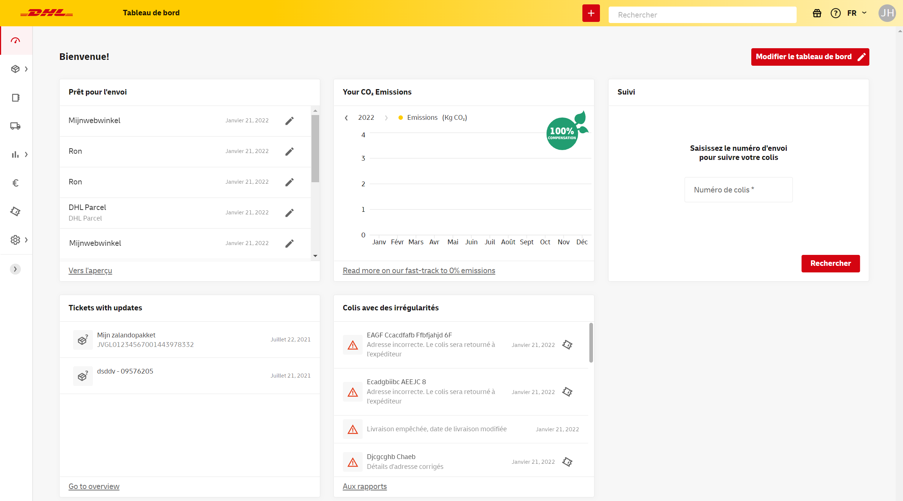Lors de votre première utilisation de My DHL Portal, vous pouvez appliquer certaines paramétrages par défaut pour simplifier l'envoi de colis et de palettes. Pour ce faire, dans la barre de menu à gauche, accédez à l'écran Préférences.
Pour définir une adresse comme adresse d'expédition par défaut, il est important que cette adresse soit dans votre carnet d'adresses. Sélectionnez Carnet d'adresses dans le menu. Ajoutez une adresse via le bouton rouge.
Ensuite, dans le menu, sélectionnez Préférences et allez à Adresse d'expédition par défaut en bas de la page. Sélectionnez ici l'adresse de votre carnet d'adresses et le numéro de client que vous souhaitez utiliser en association avec cette adresse. Cliquez sur le '+' pour ajouter l'adresse comme adresse par défaut.
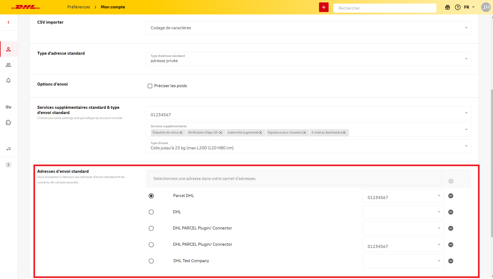Si vous configurez plusieurs adresses d'expédition, vous pouvez en choisir une qui sera sélectionnée par défaut lors de la création d'un nouvel envoi. Les autres adresses que vous ajoutez ici peuvent être facilement sélectionnées manuellement dans l'écran de Nouvelle expédition.
Si vous avez plusieurs numéros de client chez DHL eCommerce, vous pouvez les différencier en ajoutant un nom ou une caractéristique qui sera ensuite visible dans les différents écrans et rapports de My DHL Portal. Allez dans Préférences puis Paramètres de numéro de client, sélectionnez votre numéro de compte et ajoutez un nom.
Dans cet écran, vous pouvez également définir des services supplémentaires par défaut pour le numéro de compte concerné. Lors de la création d'une expédition, ces services seront automatiquement appliqués (si possible). C'est pratique si vous choisissez souvent les mêmes services.

Dans le menu Imprimante & étiquettes sous Préférences, vous avez plusieurs options pour configurer l'imprimante. La disponibilité de ces options dépend de la méthode d'impression que vous souhaitez utiliser.
Choisissez l'option Je veux imprimer directement avec une imprimante d'étiquettes. Si vous utilisez une imprimante d'étiquettes de marque Zebra, vous pouvez cocher Zebra Printing Tool pour accélérer le processus d'impression. Vous devez d'abord télécharger et installer le programme ZPL. Notez qu'en général, la qualité d'impression des étiquettes PDF est supérieure à celle des étiquettes ZPL. Contactez-nous pour d'autres renseignements.
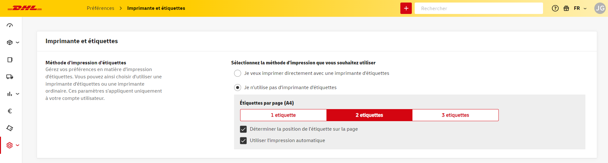Dans les paramètres de votre imprimante locale, réglez la taille de l'étiquette sur 10 x 21 cm.
Conseil : lorsque vous configurez votre imprimante d'étiquettes, créez un paramètre de préférence pour une 'étiquette DHL' au format 10 x 21 cm.
Si vous utilisez une imprimante ordinaire, sélectionnez l'option Je n'utilise pas d'imprimante d'étiquettes. Cela vous donne accès à deux nouvelles options. Tout d'abord, vous pouvez choisir le nombre d'étiquettes que vous souhaitez imprimer par page A4 (trois étiquettes maximum par page). En outre, l'option Déterminer la position de l'étiquette sur la page vous permet de déterminer à quelle position sur la page A4 l'étiquette sera imprimée si vous choisissez d'imprimer moins de trois étiquettes par page. Ce choix est disponible lorsque vous imprimez une étiquette dans l'écran Nouvel envoi.
Il est important de sélectionner paysage (landscape) et taille réelle (actual size) dans les préférences de votre imprimante locale.
Choisissez l'option Utiliser l'impression automatique si vous souhaitez afficher l'aperçu avant impression immédiatement lorsque vous cliquez sur le bouton d'impression lors de la création d'un nouvel envoi. Si cette option est désactivée, l'étiquette sera téléchargée au format PDF.
Dans le menu de gauche, sélectionnez Envois et allez à Nouvel envoi.
Si vous avez défini plusieurs adresses d'expédition standard, vous pouvez modifier l'adresse en cliquant dessus dans la barre jaune. Vous pouvez également cliquer sur Adapter dans le menu déroulant, ce qui vous permettra de saisir une toute nouvelle adresse d'expédition.
Saisissez les coordonnées du destinataire manuellement ou à partir de votre carnet d'adresses. Les champs marqués d'un * sont obligatoires. Vous pouvez saisir une adresse professionnelle ou privée. Indiquez ensuite le type d'envoi et le nombre de colis ou de palettes qu'il contient. À droite vous verrez les options de livraison et les services supplémentaires possibles.
Après avoir rempli tous les champs, enregistrez l'adresse du destinataire en sélectionnant Enregistrer dans le carnet d'adresses. Ainsi lorsque vous effectuerez une recherche par nom de société, prénom ou nom de famille, les données seront remplies automatiquement pour votre prochain envoi. Pratique si vous envoyez au destinataire plus souvent.
Enfin, utilisez le bouton d'impression pour imprimer immédiatement l'étiquette de l'envoi. À partir de ce moment, vous trouverez votre envoi dans l'écran Envois expédiés. Le bouton d'impression ne fonctionne pas ? Dans ce cas, vérifiez si vous avez rempli tous les champs obligatoires, y compris ceux de la rubrique Services supplémentaires.
Conseil : vous souhaitez réserver un enlèvement ? N'oubliez pas de le faire après avoir créé votre/vos envoi(s). Vous réservez votre enlèvement dans l'écran Enlèvement.
Souhaitez-vous imprimer plusieurs étiquettes en une seule fois ou expédier votre envoi à une date ultérieure ? Enregistrez votre envoi dans Brouillons en plaçant votre souris sur le bouton d'impression et en cliquant sur le bouton d'enregistrement qui apparaît. Vous trouverez maintenant l'envoi dans l'écran Brouillons. Sélectionnez les envois que vous souhaitez imprimer et cliquez sur Imprimer l'étiquette. Dès maintenant, vous retrouverez votre envoi dans la section Envois envoyés.
Il est également possible de dupliquer rapidement un envoi déjà créé. Allez dans la section Envois envoyés ou Envois archivés et cliquez sur l'envoi que vous souhaitez dupliquer. Ensuite, en haut à droite, sélectionnez Nouvel envoi.
Conseil : vous souhaitez réserver un enlèvement ? N'oubliez pas de le faire après avoir créé votre/vos envoi(s). Vous réservez votre enlèvement dans l'écran Enlèvement.
Les envois pour lesquels vous avez déjà créé une étiquette, mais que vous ne souhaitez toujours pas envoyer, peuvent être archivés ou déplacés vers la corbeille. Sélectionnez le(s) envoi(s) et choisissez Archiver le(s) envoi(s) ou Déplacer vers la corbeille dans le menu. L'envoi est supprimé de la liste Envois expédiés. Vous ne pouvez pas vider la corbeille.
Lorsque vous expédiez des envois soumis à des formalités douanières, vous devez joindre les documents appropriés à votre envoi. Vous trouverez toutes les informations à ce sujet sur notre site.
Vous avez la possibilité de créer une facture en anglais via My DHL Portal. Dès que vous sélectionnez une destination hors UE, un bouton permettant de remplir un formulaire de douane apparaît en bas.
Dans le formulaire qui s'affiche, indiquez d'abord s'il s'agit d'un envoi commercial (destiné à la vente) ou non. Choisissez ensuite un type d'exportation et un motif d'exportation qui s'appliquent à votre envoi.
Dans les champs suivants, sélectionnez Incoterms® et la ville Incoterm. Incoterms® sont les conditions de livraison qui reflètent les arrangements convenus entre les commerçants (acheteur et vendeur). Les plus courantes sont 'Delivered At Place' et 'Delivered Duty Paid' (cette dernière n'est possible que pour les envois à destination de la Suisse). Cliquez ici pour de plus amples informations sur Incoterms®.
Entrez la devise du pays de destination. Immédiatement en dessous, vous pouvez saisir les informations correctes (en anglais) par article et ajouter des articles en utilisant le bouton jaune. Veuillez noter que le poids de votre envoi doit toujours être d'au moins 1 kg. Le code HS ou code des marchandises est un code à plusieurs chiffres utilisé par les douanes du monde entier pour classer les produits. Vous trouverez une liste de codes ici ou demandez à votre fournisseur.
Dans Informations complémentaires, vous pouvez ajouter des commentaires en anglais et vous devez en tous cas indiquer votre numéro de TVA. Vous pouvez également ajouter le numéro de TVA de votre destinataire, votre propre numéro de facture et votre numéro EORI. Attention: les numéros de TVA suisses doivent toujours se terminer par 'TVA' ou 'IVA'.
Enfin, vous pouvez ajouter des documents douaniers supplémentaires en bas de page. Cliquez sur OK pour revenir à l'écran Nouvel envoi si vous souhaitez encore apporter des modifications aux détails de votre envoi, ou cliquez directement sur le bouton d'impression pour imprimer vos étiquettes et votre facture douanière.
Conseil : avez-vous plusieurs articles à envoyer au Royaume-Uni ? Gagnez du temps en utilisant un modèle pour importer les informations sur le produit.
Dans My DHL Portal, il existe plusieurs façons de créer une étiquette de retour. Il sera ainsi beaucoup plus facile pour votre destinataire d'effectuer des retours éventuels.
Votre destinataire souhaite renvoyer un colis ? Vous pouvez créer rapidement une étiquette de retour sur la base de l'envoi sortant. Sélectionnez Envois expédiés dans le menu.
Sélectionnez l'envoi que votre destinataire souhaite retourner, puis choisissez l'étiquette de retour par e-mail.
Vous avez maintenant deux options. Avec Return Label , vous envoyez une étiquette d’expédition au format PDF, que votre destinataire peut imprimer et coller sur le colis. Voulez-vous rendre les choses encore plus faciles pour votre destinataire? Ensuite, choisissez Code QR. Cela vous permet d’envoyer un e-mail avec un code QR, qui peut être utilisé pour retourner l’envoi à un DHL ServicePoint sans étiquette d’expédition. Votre destinataire trouvera toutes les instructions nécessaires dans cet e-mail.
Veuillez noter que les retours avec étiquette d’expédition ne sont pas possibles pour tous les pays. Demandez plus d’informations à votre gestionnaire de compte. Les retours avec code QR ne sont possibles qu’aux Pays-Bas ou à partir de ceux-ci.
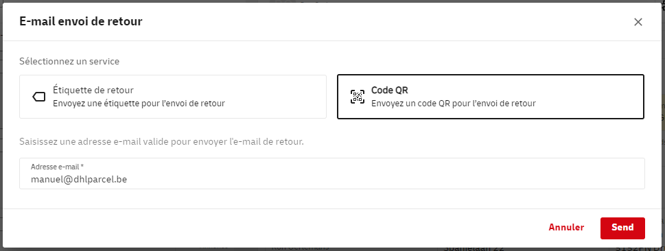Cette option n'est disponible que dans le Benelux. Vous pouvez facilement créer une étiquette de retour en définissant une autre adresse d'expédition et en saisissant vos propres données dans les données du destinataire. Pour utiliser une autre adresse d’expéditeur, cliquez sur la flèche pour développer la section Expéditeur et afficher les champs de saisie supplémentaires.
Conseil : vous souhaitez réserver un enlèvement ? N'oubliez pas de le faire après avoir créé votre/vos envoi(s) de retour. Vous réservez votre enlèvement dans l'écran Enlèvement.
Vous souhaitez offrir à votre destinataire la possibilité de retourner facilement un colis par le biais d'un DHL ServicePoint ? Lorsque vous créez votre envoi, sélectionnez le service supplémentaire Étiquette de retour.
Vous imprimez deux étiquettes : une étiquette d'expédition pour le colis et une étiquette de retour à inclure dans le colis. Cette option n'est pas disponible pour tous les pays. Demandez à votre gestionnaire de compte pour quels pays vous pouvez utiliser cette option.
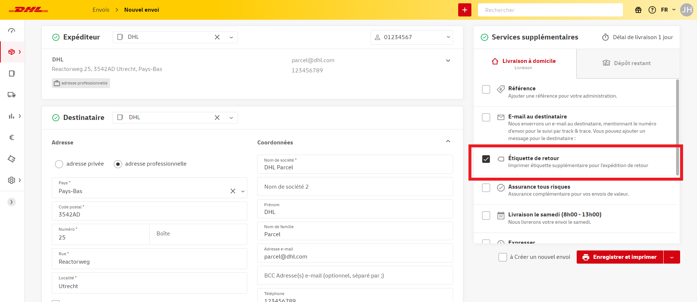Cette option n'est disponible que dans le Benelux. Vous souhaitez que le chauffeur vienne chercher un envoi chez votre destinataire et apporte lui-même l'étiquette ? Dans ce cas, allez à l'écran de Réserver un enlèvement.
Veuillez saisir votre numéro de client et la date d'enlèvement souhaitée. Saisissez l'adresse à laquelle le chauffeur doit retirer l'envoi dans la ligne Adresse d'enlèvement. Ensuite, dans la ligne Envoyer / Retourner à (facultatif), saisissez l'adresse où l'envoi doit être livré. Il peut s'agir de votre propre adresse, mais l'envoi peut également être expédié directement à une autre adresse. Le chauffeur DHL ne doit pas apporter d'étiquette ? Vous pouvez alors laisser ce champ vide.
Si vous n'avez pas encore inclus l'une de ces adresses dans votre carnet d'adresses, cliquez sur le signe plus. Dans la fenêtre qui s'ouvre, vous pouvez saisir l'adresse manuellement et l'enregistrer pour l'avenir en cochant la case Enregistrer dans le carnet d'adresses.
Enfin, indiquez le nombre de colis et de palettes et cliquez sur Réserver l'enlèvement.
Une dernière option consiste à créer une page de retours. Pour plus d'informations, voir cette section du manuel.
Dans le menu, choisissez Enlèvements, puis Réserver un enlèvement.
Sélectionnez une adresse (dans le Benelux) dans votre carnet d'adresses et le numéro de client. Indiquez le nombre de colis ou de palettes et la date à laquelle nous pouvons venir chercher votre envoi. Si nécessaire, donnez une explication (notez le nombre maximum de caractères) pour notre livreur, par exemple où il peut se présenter à cette adresse. Sélectionnez ensuite Réserver l'enlèvement afin que notre livreur reçoive un message indiquant que votre envoi est prêt à être enlevé. En bas à gauche, vous verrez la confirmation de la réussite de votre ordre d'enlèvement.
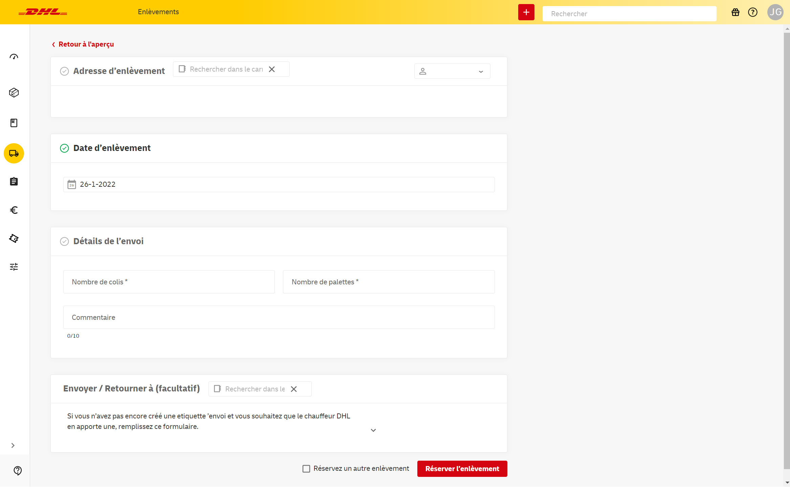Attention: si vous n'avez pas d'enlèvement fixe par jour, vous ne devez réserver qu'un seul enlèvement par jour pour votre adresse d'enlèvement. Il n'est donc pas nécessaire de réserver enlèvement pour chaque envoi.
* Vous avez pris des dispositions fermes avec votre contact DHL concernant les jours où le chauffeur passera chez vous ? Alors ces dispositions sont maintenues. Dans ce cas, il n'est pas nécessaire de réserver un enlèvement séparé. Souhaitez-vous réserver l'enlèvement à une autre adresse ? Dans ce cas, réservez un enlèvement séparé. Vous voulez réserver un enlèvement à une adresse qui ne figure pas encore dans votre carnet d'adresses ? Cliquez alors sur le signe plus et remplissez manuellement les détails de l'adresse dans la fenêtre qui s'ouvre.
Dans l'écran Enlèvements, vous trouverez un aperçu des enlèvements que vous avez réservés. Vous y trouverez le numéro d'enlèvement, la date d'enlèvement prévue et l'adresse d'enlèvement. L'adresse de destination n'est visible que si vous avez choisi de réserver un ordre de retour ou d'expédition pour lequel le chauffeur apporte l'étiquette.
Vous pouvez facilement répéter un enlèvement dans cet écran. Pour ce faire, cliquez sur l'icône à droite dans la colonne Actions. Vous arrivez à présent dans un écran pour un nouvel ordre d'enlèvement, avec autant de données que possible déjà remplies. Pour réserver l'enlèvement, cliquez sur Réserver l'enlèvement.
Enfin, vous pouvez exporter un aperçu de vos enlèvements dans un fichier CSV en cliquant sur le bouton Télécharger CSV dans le coin supérieur droit.
Vous avez de nombreux envois à envoyer simultanément ? Dans ce cas, vous préférez probablement ne pas réserver ces envois un par un. Une possibilité consiste à importer les données d'adresses et d'envois.
Téléchargez le template pour les adresses. Créez votre fichier d'adresses dans le template et sauvegardez-le en fichier txt ou csv 'délimité par des virgules' ou avec 'séparateur de liste'. Toutes les colonnes sont obligatoires sauf le suffixe du numéro de maison / le numéro de la boîte et le numéro de téléphone. Le nom de société n'est obligatoire que pour un envoi professionnel.
Sélectionnez Carnet d'adresses dans le menu et cliquez sur Importer des adresses.
Importez votre fichier d'adresses. Donnez un nom à votre fichier et associez les colonnes du fichier aux champs de l'application. Après la première association, vous pouvez facilement utiliser un schéma précédemment enregistré par le biais du menu déroulant en haut à droite.
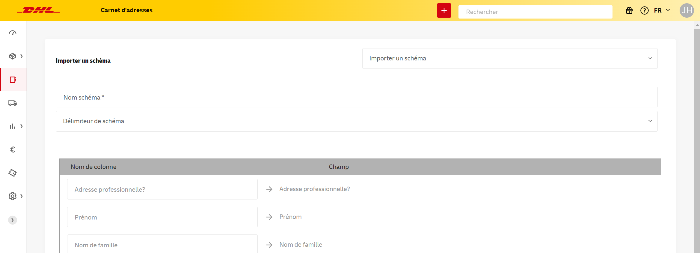Vous trouverez vos adresses importées dans le menu sous Carnet d'adresses. Ici, vous pouvez toujours modifier une adresse ou en ajouter une nouvelle.
Téléchargez le template pour les données d'envois. Créez votre liste d'envois dans le template et sauvegardez-le en fichier txt ou csv 'délimité par des virgules' ou avec 'séparateur de liste'. Dans le template, les champs obligatoires et facultatifs sont indiqués par les noms de colonnes. Déplacez votre souris sur le nom de la colonne pour voir l'explication.
Dans l'écran Envois, sélectionnez Importer des envois. Importez votre fichier avec les envois. Donnez un nom à votre fichier et associez les colonnes du fichier aux champs de l'application. Attention : si vous voyez des messages d'erreur dans les colonnes, par exemple des services supplémentaires, il est important de mettre un '0' (inactif) ou un '1' (actif) dans toute la ligne. Après la première association, vous pouvez utiliser un schéma précédemment enregistré par le biais du menu déroulant en haut à droite.
Vous pouvez également utiliser votre propre template. Veuillez vous assurer que tous les champs obligatoires sont associés. Vous pouvez alors choisir de changer le menu déroulant de Colonne à Valeur fixe dans la première colonne. Cela vous permet d'ajouter toutes les options standard pour votre importation.
Vous pouvez également choisir le service supplémentaire en standard.
Vous pouvez trouver vos envois importés dans le menu Brouillons.
Sélectionnez les envois et imprimez vos étiquettes. Vous pouvez toujours ajouter un envoi manuellement dans l'écran Nouvel envoi.
Conseil : dans le menu Préférences, vous pouvez choisir le codage correct des caractères de votre fichier CSV sous l'option Importer CSV.
Lorsque vous expédiez plusieurs articles au Royaume-Uni, vous pouvez facilement importer des informations sur ces articles lors de la création de vos documents douaniers.
Téléchargez le template pour importer des articles dans My DHL Portal. Ajoutez vos éléments dans le modèle et enregistrez le fichier en tant que fichier txt ou csv (délimité par des virgules). Toutes les colonnes sont obligatoires.
Lors de la création de votre envoi au Royaume-Uni, vous pourrez modifier le formulaire de douane étendu. Lorsque vous ouvrez ce formulaire, le bouton Importer des articles s'affiche dans la section Décrire votre envoi. Utilisez ce bouton pour télécharger votre fichier txt ou csv. Cliquez ensuite sur Suivant et sélectionnez Ignorer la première ligne. Vous verrez maintenant vos articles dans l'aperçu.
Les schémas d'importation créés se trouvent dans Import Schemas dans le menu Paramètres.
Pour supprimer des schémas, sélectionnez le schéma souhaité dans le menu déroulant et cliquez sur l'icône de la corbeille. Cette suppression ne peut pas être annulée.
Dans l'écran Envois, sélectionnez Envois expédiés. Vous pouvez suivre vos envois grâce au système de suivi en cliquant sur un envoi. Vous verrez quand votre envoi a été reçu chez nous, est en cours de livraison et quand il a été livré. Vous pouvez également télécharger la preuve de livraison ici ou l'envoyer par e-mail.
Pour faciliter le suivi de plusieurs envois, le Rapport d'envoi est une bonne option. En outre, vous pouvez toujours utiliser la fonction de recherche en haut de l'écran pour trouver des envois spécifiques.
Vous avez des questions sur votre envoi ? Contactez dans ce cas notre service clientèle.
Sélectionnez Rapports dans le menu et allez à Envois. Sélectionnez un ou plusieurs numéros de client. Sélectionnez la période pour laquelle vous souhaitez visualiser le nombre total d'envois. Vous obtenez, entre autres, un aperçu de vos envois avec le numéro d'envoi, la date d'envoi et la date de livraison.

En utilisant le bouton Tous les filtres, vous pouvez affiner votre recherche et voir les envois qui ont un statut ou une destination spécifique. Vous ne verrez que les filtres pour lesquels les envois sont disponibles dans votre sélection. Lorsque vous avez sélectionné vos filtres, appuyez sur Appliquer les filtres pour afficher vos envois. Pour désactiver les filtres actifs, cliquez sur Restaurer.
Sélectionnez Télécharger PDF, xlxs ou CSV pour télécharger les données.
L'onglet Envois entrants vous montre les envois qui sont en route vers vous. Ce rapport comprend les envois de retour et les autres envois DHL qui sont adressés à l'adresse e-mail de votre compte My DHL Portal. Vous pouvez facilement ajouter plus d'adresses e-mail dans le menu Préférences. Attention : les envois qui vous sont adressés, mais pour lesquels aucune adresse e-mail de destinataire n'est spécifiée, n'apparaîtront pas dans ce rapport.
Il suffit de filtrer par adresse e-mail et par période ou de rechercher un envoi spécifique à l'aide du champ de recherche. Sélectionnez Télécharger PDF, xlxs ou CSV pour télécharger les données.
En cliquant sur un envoi spécifique dans l'un des Rapports, vous verrez des informations détaillées sur cet envoi. Ici, vous pouvez non seulement voir tous les statuts, mais aussi, par exemple, les spécifications du colis ou de la palette. En plus de la possibilité de créer un billet, vous avez également la possibilité de télécharger le statut de l'envoi ici.
Conseil : Des actions telles que la création d'un ticket ou le téléchargement d'un statut d'expédition peuvent également être effectuées directement à partir de l'écran de présentation. Vous pouvez le faire en cliquant sur les trois points dans la colonne des Actions la plus à droite.
Vous pouvez télécharger un rapport du jour des expéditions que vous avez envoyées avec My DHL Portal. Sélectionnez Rapports dans le menu et allez à Rapport du jour.
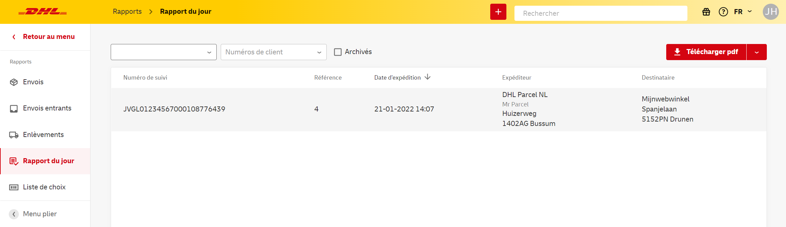Sélectionnez la date souhaitée et choisissez Télécharger pour télécharger les données sous forme de fichier pdf. Un envoi n'apparaîtra dans un rapport du jour que s'il se trouve sous Envois expédiés.
Dans le rapport GoGreen, vous pouvez voir combien de CO2 a été compensé par les envois que vous avez effectués. Filtrez en haut de la page par année, numéro de client et par exemple par destination pour obtenir des données plus spécifiques. En survolant les barres vertes avec votre souris, vous pouvez voir les valeurs exactes.
Dans cette fenêtre, vous pouvez également télécharger votre promesse GoGreen annuelle et (à la fin de l'année en question) votre certificat GoGreen validé par SGS.
Vous avez des questions sur un envoi ? Dans ce cas, vous pouvez créer rapidement et facilement un ticket dans My DHL Portal. De cette façon, votre question et toutes les données nécessaires à l'envoi seront partagées directement avec le service clientèle. Par ailleurs, vous aurez toujours un aperçu clair de l'état d'avancement de vos questions ouvertes. Vous pouvez créer un ticket de deux manières.
Depuis le tableau de bord, allez dans Envois et visualisez vos Envois expédiés. Sélectionnez l'envoi pour lequel vous souhaitez créer un ticket et cliquez sur le bouton Ticket. Votre envoi contient plusieurs colis ? Cliquez dans ce cas sur le bouton Ticket du colis pour lequel vous souhaitez créer un ticket.
Un formulaire apparaît. Sélectionnez un motif pour votre ticket, puis entrez le plus de détails possible. Plus notre service clientèle recevra d'informations de votre part, mieux il sera à même de trouver une solution. Attention : si vous avez envoyé un colis à un consommateur hors du Benelux avec DHL Parcel Connect, veuillez ajouter la facture en pièce jointe au ticket.
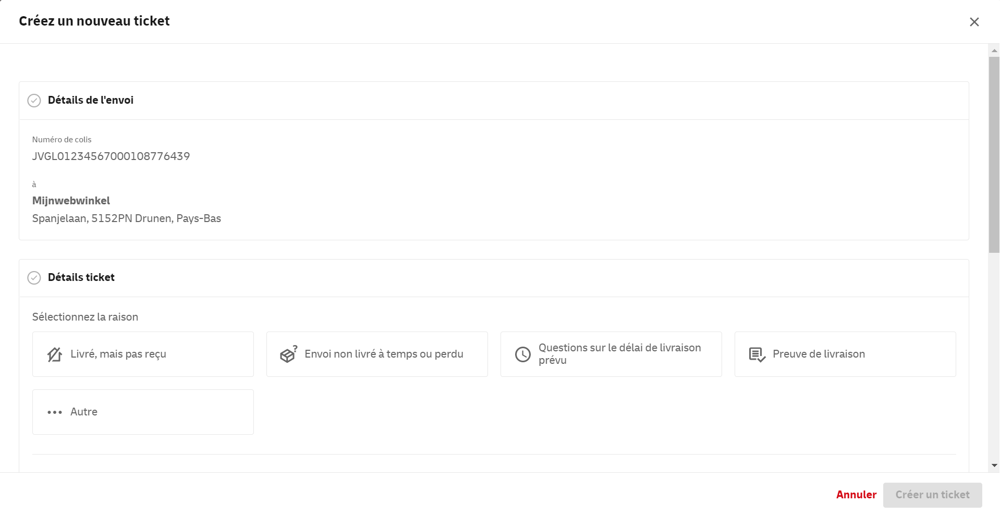Une autre façon de créer un ticket pour notre service clientèle consiste à passer par l'écran Rapport. Dans le tableau de bord, allez dans Rapports et cliquez sur Envois. Sélectionnez l'envoi pour lequel vous souhaitez créer un ticket et cliquez sur le bouton Ticket. Votre envoi contient plusieurs colis ? Sélectionnez d'abord le colis pour lequel vous souhaitez créer un ticket.
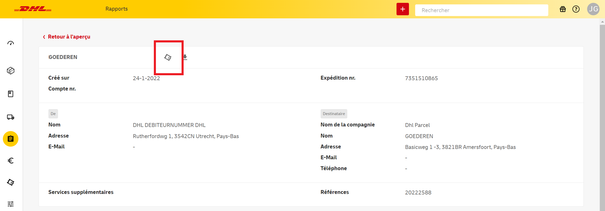Un formulaire apparaît. Sélectionnez un motif pour votre ticket, puis entrez le plus de détails possible. Plus notre service clientèle recevra d'informations de votre part, mieux il sera à même de trouver une solution. Attention : si vous avez envoyé un colis à un consommateur hors du Benelux avec Parcel Connect, veuillez ajouter la facture en pièce jointe au ticket.
Vous trouverez tous vos tickets créés sur l'écran Tickets. Pour consulter cet aperçu et les mises à jour de notre service clientèle, cliquez sur Tickets dans le menu de gauche.
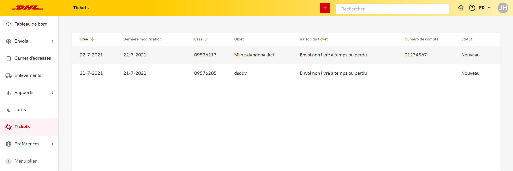Vous voulez rendre les tickets visibles pour les collègues qui utilisent My DHL Portal avec leur propre compte ? Veuillez contacter le service Sales Support au 02-200 71 30 ou envoyer un e-mail à parcelbe.salessme@dhl.com.
Nous souhaitons informer proactivement les expéditeurs professionnels des retards de livraison. Nous nous efforçons d’être aussi précis que possible afin de vous informer au moment approprié. Pour démarrer à petite échelle, nous enverrons un e-mail dès que votre envoi professionnel est immobilisé dans le Benelux et que DHL a besoin de nouvelles instructions.
Expédiez-vous des envois professionels au sein du Benelux? Il se peut que nous ayons besoin de nouvelles instructions si nous n'avons pas pu livrer un envoi. Inscrivez-vous aux notifications proactives pour recevoir une notification par e-mail dès que nous avons besoin de nouvelles instructions.
Allez dans votre rapport d'envois et cliquez sur Notifications proactives. Sélectionnez votre (vos) numéro(s) de client souhaité(s), cochez 'Envoi en attente, instructions nécessaires' et sélectionnez l'adresse e-mail souhaitée.
Remarque: Seul le Gestionnaire d'Utilisateurs (avec le rôle Organisation & User manager) peut configurer des notifications proactives pour plusieurs adresses e-mail ; les autres utilisateurs ne peuvent s'inscrire que pour eux- mêmes.
Si une personne au sein de votre organisation s'est inscrite à la notification proactive "Envoi en attente, instructions nécessaires", vous serez automatiquement désinscrit de l'ancienne version* de cette notification. Ce processus peut prendre quelques jours, et il est possible que vous receviez encore les deux notifications pendant cette période. Cette situation ne s'applique pas si vous êtes un nouveau client.
*Vous recevez l'ancienne version de la notification de l'adresse e-mail : nlcs_noreply@dhl.com.
Pour vous désinscrire des notifications proactives, cliquez sur le lien de désinscription en bas d'un e-mail de notification proactif reçu.
Remarque: Cela annulera toutes les notifications proactives configurées pour cette adresse e-mail. Vous pouvez vous réinscrire comme décrit dans le texte ci-dessus.
Il peut arriver que votre envoi ne puisse pas être remis au destinataire. Dans certains cas, l'envoi peut rester sur l'un de nos sites DHL. Pour les envois professionnels, vous pouvez utiliser le Rapport d'envoi dans My DHL Portal pour nous indiquer ce que nous devons faire avec l'envoi. Si vous ne fournissez pas d'instructions, l'envoi sera renvoyé à l'expéditeur après 30 jours.
Pour trouver rapidement les envois qui nécessitent des instructions, dans Rapport d'envoi, filtrez sur Instructions requises. Cliquez ensuite sur le bouton Instructions requises dans la colonne Attention pour soumettre de nouvelles instructions concernant un envoi.
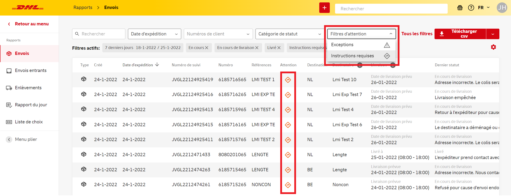Un formulaire apparaîtra dans lequel vous pourrez indiquer ce qui doit advenir de l'envoi. Si vous souhaitez soumettre à nouveau l'envoi, vous pouvez choisir une nouvelle date jusqu'à deux mois dans le futur. En bas du formulaire, vous pouvez voir combien de jours vous pouvez encore donner des instructions, après quoi l'envoi sera renvoyé.
Choisissez Préférences dans le menu et allez à Gérer.
Cliquez sur Ajouter pour ajouter de nouveaux utilisateurs. Ici, vous pouvez également définir directement les droits/rôles par utilisateur et sélectionner les numéros de clients qui s'appliquent à cet utilisateur. Vous pouvez modifier les droits d'un utilisateur à tout moment en faisant un clic droit sur les trois points, puis en cliquant sur Modifier. Dans l'écran qui apparaît, choisissez les droits et cliquez sur Enregistrer.
Vous pouvez paramétrer les rôles d'utilisateurs suivants dans My DHL Portal :
- Basic user : Ce rôle par défaut permet à l'utilisateur de visualiser les envois, les enlèvements, les entrées dans le carnet d'adresses et les pages de retours. Il permet également à l'utilisateur de définir un logo client pour personnaliser les notifications de DHL.
- Reporting Manager: ce rôle permet d'accéder à la page Rapports ainsi qu'à tous les rapports qui s'y trouvent. Cet utilisateur peut également accéder au widget « Vos émissions de CO2 » sur le tableau de bord.
- Shipments Manager: avec ce rôle, l'utilisateur peut exécuter les fonctions dévolues au Basic user mais également
- créer, importer, copier, archiver et supprimer des envois (et retours)
- réserver et copier des enlèvements
- ajouter, importer, supprimer et modifier des adresses dans le carnet d'adresses
- consulter et modifier les options d'expédition standard
- créer, éditer et (dés)activer des pages de retour
- Support ticket manager: ce rôle permet à l'utilisateur d'accéder à la fonctionnalité Tickets, comme la création et la consultation de tickets pour notre service clientèle.
- User manager : ce rôle permet à l'utilisateur d'accéder à la gestion des utilisateurs, comme l'ajout et l'édition d'autres utilisateurs dans le même environnement.
- Rate manager: ce rôle permet à l'utilisateur d'accéder à la page des tarifs, et ainsi de visualiser les tarifs des numéros de compte sélectionnés.
- API manager: ce rôle permet d'accéder à la page des paramètres de la clé API. Vous pouvez y générer des clés API qui permettent, par exemple, de connecter votre boutique en ligne à My DHL Portal.
Attention : vous ne pouvez ajouter un utilisateur qu'une seule fois. Vous avez accidentellement supprimé un utilisateur ? N'hésitez pas à nous contacter.
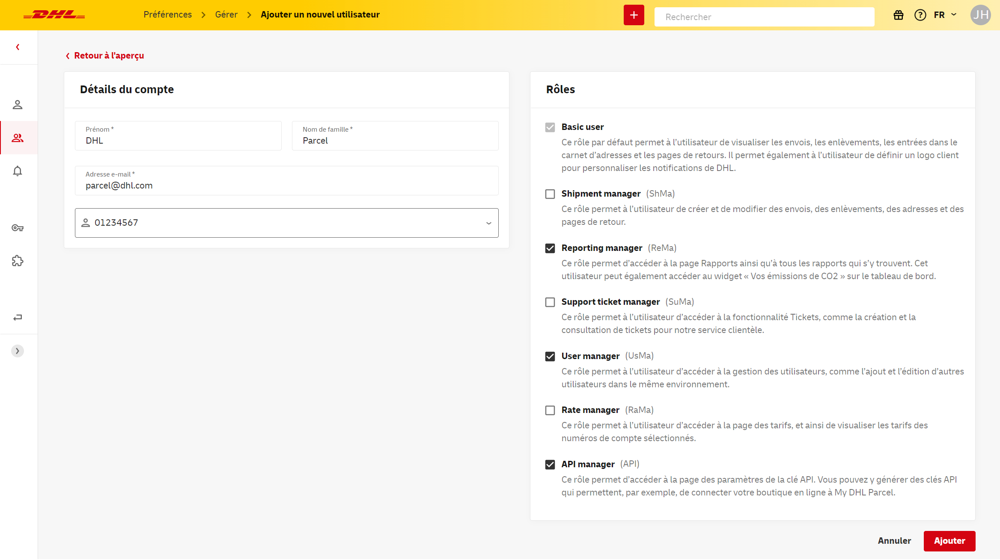Vous souhaitez donner à vos destinataires du Benelux la possibilité de créer eux-mêmes leurs retours ? Créez ensuite une page de retour et mettez le lien vers cette page sur votre site web ou dans vos messages e-mail. De cette façon, vous offrez à vos clients un service supplémentaire et simplifiez en même temps votre propre processus de retour.
Accédez à l'écran Pages de retour dans Préférences. Utilisez le bouton rouge Ajouter page de retour pour ajouter une nouvelle page.
Un formulaire apparaît. Saisissez les détails de l'adresse qui doit apparaître sur les étiquettes de retour en tant que détails du destinataire. Normalement, il s'agit de votre propre adresse. Sélectionnez ensuite le numéro de compte sur lequel les retours doivent être comptabilisés et téléchargez votre logo. Ce logo apparaît sur la page de retour, rendant la page facilement reconnaissable pour votre client.
Enfin, sélectionnez les méthodes de retour proposées sur la page de retour. Vous pouvez sélectionner plusieurs méthodes, le client faisant le choix lors de la création d'un envoi de retour. Dans le cas d'un enlèvement à une adresse privée ou professionnelle, le client choisit le jour et l'heure qui lui conviennent le mieux et le chauffeur prend l'étiquette. Attention : toutes les méthodes de retour ne sont pas possibles dans tout le Benelux. Vous pouvez voir les pays autorisés pour chaque méthode.
Cliquez sur Créer un portail de retour. Vous verrez maintenant votre page dans l'écran Pages de retour. Dans la colonne Actions, vous pouvez (dé)activer la page, la modifier ou copier l'URL pour la placer sur votre site web.
Si votre compte utilisateur dispose des droits appropriés, vous pouvez consulter les taux tarifs associés à votre ou vos numéro(s) de client dans l'écran Tarifs. Vous pouvez facilement filtrer les tarifs par type de destinataire, type d'envoi et pays de destination. Si de nouveaux tarifs s'appliquent à l'avenir, par exemple parce que vous utilisez un nouveau produit, vous pouvez trouver ces tarifs en cochant Montrer futurs tarifs>.
Exportez facilement vos tarifs en Excel ou PDF en cliquant sur Télécharger en haut à droite de l'écran.
Si DHL connaît l'adresse e-mail du destinataire, par exemple parce que vous l'avez saisie lors de la création de l'envoi, nous tiendrons le destinataire informé du statut de l'envoi par des notifications automatiques par e-mail. Vous pouvez personnaliser ces notifications avec votre propre logo.
Pour ce faire, allez dans l'onglet Notifications du menu Préférences.
Cliquez sur Nouveau logo. Dans l'écran qui s'affiche, sélectionnez le numéro de client pour lequel vous souhaitez configurer un logo. Les notifications par e-mail pour les envois créés sur ce numéro incluront le logo, même si les envois ne sont pas créés dans My DHL Portal. Cliquez sur Parcourir ice pour télécharger votre logo. Les logos sont souvent mieux affichés au format PNG, et une taille minimale de 100x100 pixels est recommandée. Redimensionnez ensuite l'image selon vos souhaits en faisant glisser, en réduisant ou en agrandissant le champ de sélection. Pour terminer, cliquez sur Envoyer.